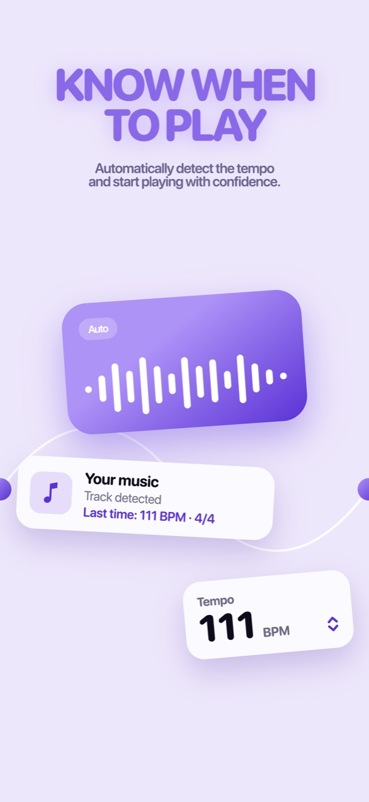
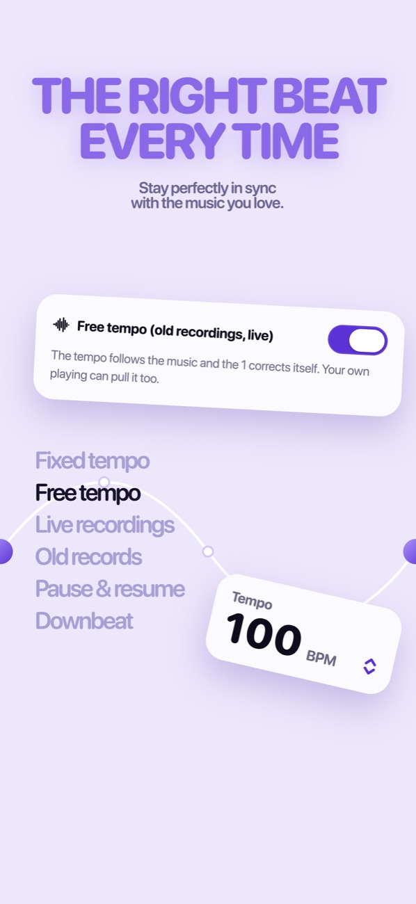
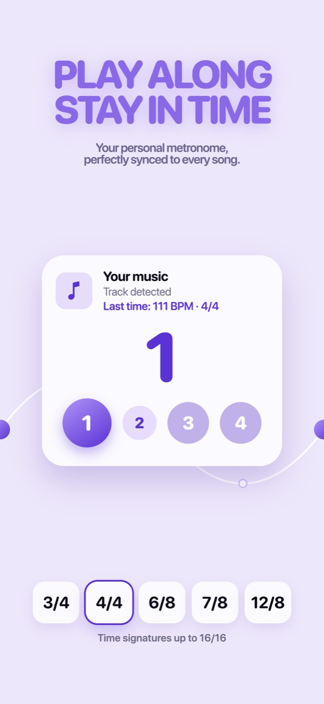
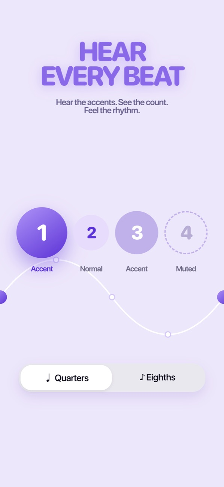

How it works
Play music
From a speaker, a band or another app.
Let it listen
After about 6–10 seconds, tempo, time signature and beat 1 are detected. Songs the app has heard before are recognised after about 5 seconds, even without internet.
Play along
The metronome clicks in time, with beat 1 higher and louder. In eighth notes if you like.
Stays on the music for as long as it plays.
Fixed tempo
Once locked, tempo and beat 1 stay put. Playing, singing or clapping along does not throw the metronome off.
Free tempo
For old or live recordings whose tempo drifts. The metronome moves with the music.
Offline recognition
Songs it has heard start right away next time with the correct beat, even when the tempo drifts.
Pause and rejoin
Pause silences the metronome while it keeps following the music. Rejoin brings it back exactly in time.
Made for headphones
Click lead time against Bluetooth delay. Clicks can play through the iPhone speaker instead.
Manual
A regular metronome with 30–300 BPM, time signatures up to 16/16 and tap tempo. Works without the microphone too.
Know when to come in.
Accented beat 1, quarter or eighth notes. Every beat can be accented, normal or muted.




No account. No ads. No tracking.
Read the privacy policy- Microphone
- Sound is analysed on your device. No recordings are stored or sent.
- Song recognition
- An audio fingerprint (no audio) is sent to Shazam (Apple).
- Tempo data
- For a recognised song, title and artist are sent to GetSongBPM.
Support for AutoMetronom
Briefly describe your request. We reply as soon as possible and use your details only to handle your request.
So we can help: please include device, iOS version, app version, the song played and a short description. A screenshot often helps.
Legal texts
Choose the region where you use AutoMetronom.
- SwitzerlandPrivacy policyTerms of useCopyright
- European Union and EEAPrivacy policyTerms of useCopyright
- United StatesPrivacy policyTerms of useCopyright
- Mainland ChinaPrivacy policyTerms of useCopyright
- Other regionsPrivacy policyTerms of useCopyright